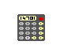

2. Numbers and arithmetic
2.1 In the Z-machine, numbers are usually stored in 2 bytes (in the form most-significant-byte first, then least-significant) and hold any value in the range $0000 to $ffff (0 to 65535 decimal).
2.2 These values are sometimes regarded as signed, in the range -32768 to 32767. In effect -n is stored as 65536-n and so the top bit is the sign bit.
2.2.1 The operations of numerical comparison, multiplication, addition, subtraction, division, remainder-after-division and printing of numbers are signed; bitwise operations are unsigned. (In particular, since comparison is signed, it is unsafe to compare two addresses using simply jl and jg.)
2.3 Arithmetic errors:
2.3.1 It is illegal to divide by 0 (or to ask for remainder after division by 0) and an interpreter should halt with an error message if this occurs.
2.3.2 Formally it has never been specified what the result of an out-of-range calculation should be. The author suggests that the result should be reduced modulo $10000.
2.4 The Z-machine needs a random number generator which at any time has one of two states, "random" and "predictable". When the game starts or restarts the state becomes "random". Ideally the generator should not produce identical sequences after each restart.
2.4.1 When "random", it must be capable of generating a uniformly random integer in the range 1 <= x <= n, for any value 1 <= n <= 32767. Any method can be used for this (for instance, using the host computer's clock time in milliseconds). The uniformity of randomness should be optimised for low values of n (say, up to 100 or so) and it is especially important to avoid regular patterns appearing in remainders after division (most crudely, being alternately odd and even).
2.4.2 The generator is switched into "predictable" state with a seed value. On any two occasions when the same seed is sown, identical sequences of values must result (for an indefinite period) until the generator is switched back into "random" mode. The generator should cope well with very low seed values, such as 10, and should not depend on the seed containing many non-zero bits.
2.4.3 The interpreter is permitted to switch between these states on request of the player. (This is useful for testing purposes.)
Remarks
It is dangerous to rely on the older ANSI C random number routines (rand() and srand()), as some implementations of these are very poor. This has made some games (in particular, 'Balances') unwinnable on some Unix ports of Zip.
The author suggests the following algorithm:
1. In "random" mode, the generator uses the host computer's clock to obtain a random sequence of bits.
2. In "predictable" mode, the generator should store the seed value S. If S < 1000 it should then internally generate
1, 2, 3, ..., S, 1, 2, 3, ..., S, 1, ...
so that random n produces the next entry in this sequence modulo n. If S >= 1000 then S is used as a seed in a standard seeded random-number generator.
(The rising sequence is useful for testing, since it will produce all possible values in sequence. On the other hand, a seeded but fairly random generator is useful for testing entire scripts.)
Note that version 0.2 of this standard mistakenly asserted that division and remainder are unsigned, a myth deriving from a bug in Zip. Infocom's interpreters do sign division (this is relied on when calculating pizza cooking times for the microwave oven in 'The Lurking Horror'). Here are some correct Z-machine calculations:
-11 / 2 = -5 -11 / -2 = 5 11 / -2 = -5 -13 % 5 = -3 13 % -5 = 3 -13 % -5 = -3